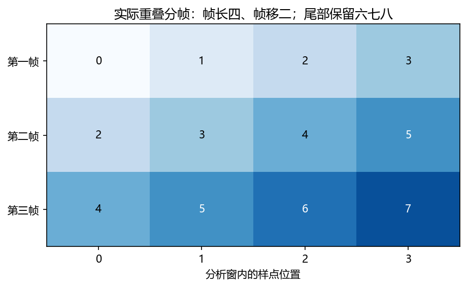
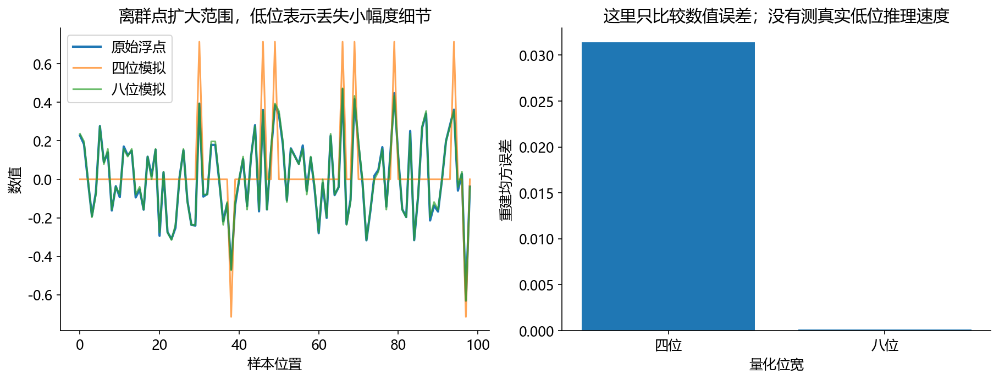

看图理解 · 跟着推演 · 对照真实结果
第16课 · 音频怎样一块块处理：缓存与延迟
先建立直觉，再逐节讲原理、代码与结果；章节目录可定位学习。把九个样点分三块送入，亲眼追踪重叠帧和必须保留的尾部。
从直觉、原理，到代码与结果
本版保留导览小实验，增加教材逐节精讲、代码分段阅读和结果解释。三个项目另有本次真实模型短推理，第 12 课增加实际训练曲线。按右侧小节分次学习即可，不必一次看完。
完整文字、规范公式和注释代码仍在上方“读完整图文”。视频中的历史报告、教学算例与本次实测分别标明，短演示不冒充完整重训或设备验收。
先修：数组切片、采样率、分帧；不要求并发开发经验。
- 正确实现跨块重叠分帧
- 区分输入块、窗长和帧移
- 解释 RTF、首包延迟与轮次取消
本课覆盖清单与证据范围
- 1. 从一个文件到一个预测，中间要有“账本”
- 2. 分块到达的声音，不能每一块都当作一条新录音
- 3. RTF 小于 1，为什么用户仍觉得慢
- 4. 量化不是把 float 换个名字，而是改变数值刻度
- 5. 导出 ONNX 后，要证明“还是同一个算法”
- 6. 语音助手的打断：清空队列为什么还不够
- 7. 练习答案与一次有用的故障调查
- 8. 你的实习交付，应该让别人一键复现
结果从哪里来
- 导览中的小算例实际执行
- 原教材逐节讲解；正文代码/公式/图保留
代码只验证数组缓存，不是可上线实时音频回调；没有测量设备延迟、并发、量化或真实模型推理。
新版视频时间轴已改变，单独记录续播位置；学习计划的完成勾选保持不变。
跟着运行：注释代码、实际输出与结果图
下面代码在生成本站时实际执行。这里只是教学小实验，不是完整模型训练或业务设备测评。
import numpy as np
# 用缩小的样点编号观察缓存，不是真实波形
size, hop = 4, 2
buffer = np.empty(0)
frames = []
for chunk in [np.arange(3), np.arange(3, 6), np.arange(6, 9)]:
buffer = np.concatenate([buffer, chunk])
while len(buffer) >= size:
frames.append(buffer[:size].copy())
buffer = buffer[hop:] # 只前进帧移，保留重叠
matrix = np.stack(frames)
position = np.arange(size)
first, second, third = matrix
for i, frame in enumerate(matrix):
print("帧", i+1, frame.astype(int).tolist())
print("余量", buffer.astype(int).tolist())
assert matrix.shape == (3, 4)
本次实际输出
帧 1 [0, 1, 2, 3] 帧 2 [2, 3, 4, 5] 帧 3 [4, 5, 6, 7] 余量 [6, 7, 8]

精讲中的代码、运行步骤与大图
代码片段用于逐行理解；真实运行结果仅限明确标注“本次实际”的部分。教材历史图保留原有实验范围。
代码精读 02 · 第1–18行
源码精读 / 教学片段，需配套环境与上下文，不等同于独立脚本。
import numpy as np
frame_size, hop_size = 4, 2
buffer = np.empty(0, dtype=float) # 保存还可能参与下一帧的样点
frames = []
chunks = [np.arange(0, 3), np.arange(3, 6), np.arange(6, 9)]
for chunk in chunks:
buffer = np.concatenate([buffer, chunk]) # 接上新样点，不重置历史
while len(buffer) >= frame_size:
frames.append(buffer[:frame_size].copy()) # 当前完整分析窗
buffer = buffer[hop_size:] # 只前进帧移，保留重叠
print([frame.tolist() for frame in frames])
print(buffer.tolist())
# 预期帧：[0,1,2,3]、[2,3,4,5]、[4,5,6,7]；剩余：[6,7,8]
# 每行画一个真实输出帧，数字显示它来自原始序列的哪个样点。
from pathlib import Path
import matplotlib代码精读 02 · 第19–34行
源码精读 / 教学片段，需配套环境与上下文，不等同于独立脚本。
matplotlib.use("Agg")
import matplotlib.pyplot as plt
plt.rcParams.update({"font.family": "Microsoft YaHei", "axes.unicode_minus": False})
matrix = np.stack(frames)
fig, ax = plt.subplots(figsize=(7, 3.8))
ax.imshow(matrix, cmap="Blues", aspect="auto", vmin=0, vmax=8)
for row in range(len(frames)):
for column in range(frame_size):
value = matrix[row, column]
ax.text(column, row, str(int(value)), ha="center", va="center",
color="white" if value > 4 else "black")
ax.set(xticks=range(4), yticks=range(3), yticklabels=["第一帧", "第二帧", "第三帧"],
xlabel="分析窗内的样点位置", title="实际重叠分帧：帧长四、帧移二；尾部保留六七八")
Path("tutorial/figures").mkdir(parents=True, exist_ok=True)
fig.savefig("tutorial/figures/ch16_buffer.png", dpi=150, bbox_inches="tight")
plt.close(fig)结果读图 02 · 2. 分块到达的声音，不能每一块都当作一
原教材运行记录

原教材已存图 不是本次新测 先确认实验范围 再解释坐标与单位
代码精读 04 · 第1–10行
源码精读 / 教学片段，需配套环境与上下文，不等同于独立脚本。
import numpy as np
x = np.array([-1.4, -0.31, 0., 0.31, 1.4])
limit = 7 # 教学用对称四位范围
scale = np.max(np.abs(x)) / limit
q = np.clip(np.rint(x/scale), -limit, limit) # 舍入，再限制整数范围
q = q.astype(np.int32) # 仅演示；并非真实四位打包
reconstructed = q * scale # 模拟反量化
print(q.tolist()) # [-7, -2, 0, 2, 7]
print(np.round(reconstructed, 2).tolist()) # [-1.4,-0.4,0,0.4,1.4]结果读图 04 · 4. 量化不是把 float 换个名字，
原教材运行记录

原教材已存图 不是本次新测 先确认实验范围 再解释坐标与单位
代码精读 06 · 第1–18行
源码精读 / 教学片段，需配套环境与上下文，不等同于独立脚本。
from collections import deque
class Session:
def __init__(self):
self.turn = 0
self.listening = False
self.queue = deque() # 尚未交给播放设备的音频块
def user_starts(self):
self.turn += 1 # 旧任务从现在起失效
self.listening = True
self.queue.clear() # 清理还没播放的旧结果
return self.turn
def user_finishes(self):
self.listening = False
def receive(self, turn, chunk):代码精读 06 · 第19–33行
源码精读 / 教学片段，需配套环境与上下文，不等同于独立脚本。
if turn != self.turn or self.listening:
return False # 拒绝旧轮次或用户讲话期间的结果
if len(self.queue) >= 8:
raise BufferError("队列满，需要背压")
self.queue.append(chunk)
return True
s = Session()
old = s.user_starts(); s.user_finishes()
assert s.receive(old, "旧回答第一块")
new = s.user_starts() # 用户插话，旧队列被清空
assert not s.receive(old, "迟到的旧回答")
s.user_finishes()
assert s.receive(new, "新回答")
print(s.turn, list(s.queue)) # 2，['新回答']闭卷自测：窗长 4、帧移 2，三块 [0,1,2]、[3,4,5]、[6,7,8] 到达后，完整帧和余量是什么？
完整帧为 [0,1,2,3]、[2,3,4,5]、[4,5,6,7]；保留 [6,7,8]，尾部策略需另行指定。
逐字讲稿 · 可定位回看
饭店炒菜只花 5 分钟，不代表从进店到吃饭只等 5 分钟，你还可能排队。实时音频也要区分处理能力和端到端等待。
16 kHz 下，每块 320 点代表 20 毫秒声音；处理一块用 5 毫秒，则本例计算时间与音频时长之比是 0.25。 但若首个结果要先凑满 20 毫秒，再等 40 毫秒未来上下文，再算 5 毫秒，这条简化串行路径就约需 65 毫秒。
再加入设备、网络或播放缓冲，用户等待还会增加。另一方面，长时间平均每块算得比到达更慢，会形成积压。 RTF 小于 1 是有用信息，但不是任何设备、任何并发、任何首包延迟都合格的保证。
离线读整段音频时，所有样点已经在内存。实时声卡却一次只送一小块，如果你每次都重建缓存或滤波器状态，连续声音会在边界被人为切断。
输入块由采集接口决定，分析窗和帧移由算法决定，它们不必相等。要用缓存连接两种节奏，而不是强迫每收到一块就恰好输出一帧。
本课把真实数百样点缩成编号零到八，分成三块到达。我们能在屏幕上跟踪每个数字被哪一帧使用，最后再把逻辑放回实际采样率。
采样率一万六千赫兹表示每秒一万六千点。声卡二十毫秒回调一次，就是一万六千乘零点零二，等于三百二十点，不是三十二万点。
假设分析窗三十二毫秒，就需要五百一十二点；帧移十毫秒，是一百六十点。第一块三百二十点还凑不够分析窗，所以不能立刻假装已经有完整帧。
第二块到来才有六百四十点，可以先取五百一十二点，再只前进一百六十点。窗口用过的部分仍可能参与下一帧，因此不能整窗删除。
现在窗长改成四，帧移改成二，输入每次三点。第一块是零、一、二，缓存长度三，比窗长四少一个，因此这一轮输出零帧。
等待不等于程序失败。算法没有拿到足够的信息，就应保留这三个样点。若每个回调都把不足一帧的尾部丢掉，永远凑不成正确的跨块窗口。
也不要每次不足就自动补零，除非这是明确设计并验证过的边界策略。否则连续录音中间会被插入不属于真实声音的空白，影响特征与模型输出。
第二块三、四、五接上后，缓存是零到五。先取前四个，得到第一帧零、一、二、三。只前进两点，缓存剩二、三、四、五。
剩下四点还够一帧，因此继续取第二帧二、三、四、五。再前进两点，留下四、五，才结束这一轮。这就是代码必须循环检查，而不是只执行一次的原因。
样点二和三同时出现在前两帧，是我们需要的重叠，不是重复读取的错误。第一块零帧、第二块两帧，也说明输入块和输出帧不能按数量强行一一配对。
第三块六、七、八到来，接上四、五，得到五点。取出四、五、六、七形成第三帧，再前进两点，留下六、七、八。现在又不足四点。
这三个数字里，六和七已经在上一帧用过，但它们还需要参与下一帧，所以仍保留。八还没有进入任何完整窗，随意清空会让尾部内容消失。
如果录音还会继续，就等待下一块。如果确定录音结束，需要明确补零完成最后一窗还是丢弃不足窗，并记录这个规则。两种选择影响边界，不能假装没有区别。
代码先创建空缓存和帧列表，然后依次送入三组数字。拼接保证本轮数据接在上轮剩余之后，而不是覆盖历史。这里的数据是样点编号，只为了看清位置。
循环条件是缓存至少四点。切片取前四点，加 copy 保存这一帧的快照；再通过 buffer 等于 buffer 从 hop 往后，前进两点并保留重叠。
最后把三帧堆成三行四列矩阵，每行单独画一条线。这个演示容易理解，但反复拼接和分配内存不适合严格实时回调，工程实现常改成预分配环形缓存。
横轴是窗内位置零到三，纵轴是原始样点编号。三条线依次从零、二、四开始，说明每次帧起点只前进两点，符合帧移而不是窗长。
比较第一条末尾的二、三与第二条开头的二、三，就能看到重叠。打印尾部是六、七、八，最后的八尚未进入完整分析窗，验证了边界解释。
本图没有测声音质量或运行速度，它证明的是分块下标逻辑。接入真实音频后，还需要验证窗函数、重叠相加、模型状态及最终输出长度。
十秒录音用两秒计算，实时因子就是零点二，平均算得比声音到达快。但如果必须等整段十秒录完才开始，第一字仍然很晚才出现。
延迟还包含凑窗、未来上下文、句末判断、排队、模型计算与播放缓存。测首包时必须写清起点和终点，是用户开口、说完、收到数据，还是扬声器真的播放。
百分之九十五分位延迟不是最慢百分之五请求的平均值。也不能把每个模块的分位数直接相加当系统分位数，应记录同一轮真实事件时间戳再统计。
想象回答播放一半，用户插话，你清空队列后暂时安静了，但旧语音合成任务还在后台跑。一百毫秒后旧音频又回调，若直接接收，旧回答就重新开始。
一种明确的逻辑是给每轮任务编号，新轮次开始就递增，所有结果回调先检查编号。旧编号一律拒收，同时取消旧计算、处理声卡已排队声音，不能只做其中一步。
队列还应有上限和背压，避免生成一直快于播放而无限积压。真正识别用户插话又是另一个问题，需要回声消除和语音活动判断，状态正确不代表检测准确。
自测：三百二十点在十六千赫兹下是多长？三百二十除以一万六千等于零点零二秒，也就是二十毫秒。每次换采样率都重新算，别沿用旧块时长。
如果回答越来越晚，先记录生成、入队、出队、播放时间和队列深度。生成稳定而队列变长，更可能是消费速度或背压；旧轮次重新入队则是取消逻辑问题。
动手作业把三点输入块改成两点，完整输出帧应仍对应同一连续序列。能证明不同投递切法不改变算法结果，再去优化性能，项目就有了可靠的回归测试。
一块二百五十六点、一万六千赫兹对应十六毫秒输入量，但算法可能先等五百一十二点才能输出。除此之外，采集缓冲、队列、特征计算、网络、合成和播放还各有成本。
平均耗时低于每块预算，不保证每一次都按时。记录P95、P99、最大值和超时次数，尤其注意模型初始化、内存分配和后台负载造成的尖峰。
文件一次性快速送入测到的是吞吐与软件行为；真实端到端延迟需要采集和播放或显示时刻的同一时钟记录。把二者放在报告不同字段，避免误用。
开始会话时初始化必要状态，之后每次push只追加新数据并产出当前可用结果。不能无限保存所有历史录音，否则短演示能跑，长会话却持续增长内存。
flush表示不会再有输入，需要把尾部完成；重复flush应该遵守接口约定。新会话reset要清空DSP、网络与解码状态，不能只清一个环形缓冲就认为完成。
用户打断后，旧任务可能仍在异步返回音频。用会话标识或取消令牌拒绝过期结果，并清理对应队列。只暂停播放器不能阻止旧生成任务稍后继续塞入数据。
初学者常在代码里写一个音频路径，成功跑通后便认为数据管线完成了。真实项目更需要知道：这段音频是什么采样率、几个声道、来自哪个会话、属于哪个集合、标注由谁检查、是否有使用权限。
可以用一行一个样本的 JSONL 清单记录 id、audio、sample_rate、duration、speaker、session、split、text 等字段。不是所有任务都需要文字或真实说话人信息，但编号必须稳定；模型输出也要带同一个编号，不能依赖文件遍历顺序恰好相同。
读取时先检查文件能否解码、波形是否有限、是否全静音、是否削波、时长是否异常。转换采样率后保存转换规则；立体声转单声道要说明策略。对双麦阵列，随意求平均会丢掉空间信息，不能把它当作普遍正确的预处理。 训练集和测试集拆分必须先确定，再拟合归一化统计量、挑阈值和微调。随机种子能帮助复现，但不能替代完整配置；模型文件、代码版本、前处理参数和数据清单都要对应保存。一次成功运行的终端截图，无法替代这些证据。
采样率 16000 Hz，声卡每 20 ms 回调一次，就会送来 16000乘0.02=320 个样点。算法若用 32 ms 分析窗、10 ms 帧移，需要每帧 512 点、每次前进 160 点。第一块只有 320 点，连一帧都不够；要等下一块补足，再保留重叠部分继续分析。
缓存像一个传送带：新样点从后面进，处理过的帧按帧移向前走，尚未用完的重叠部分必须留下。它不是把整段历史永远存下来。网络若还有卷积或注意力历史状态，也需要自己的缓存，不能和波形缓存混为一谈。
从课程根目录 audio-course-zh 运行完整代码，会把实际形成的三个重叠帧保存到 tutorial/figures/ch16_buffer.png。
按行读图会看到 [0,1,2,3]、[2,3,4,5]、[4,5,6,7]。样点 2、3 同时出现在前两帧，不是重复读取错误，而是短时分析设计中的重叠。
第一块不产生完整帧，第二块产生两帧，第三块再产生一帧。最后三个样点还不足四点，本例故意留下它们。录音结束时要明确选择补零处理还是丢弃尾部，不能让尾音“自然消失”而不记录。
这是便于理解的数组实现，反复拼接和复制并不适合严苛实时回调。工程中通常使用预分配的环形缓冲区，读写指针循环移动；回调里尽量不进行磁盘访问、网络请求和大块内存分配。原则先学清楚，再优化实现。
先看中文注释：保存还可能参与下一帧的样点。arange按固定步长生成索引。若随后除以采样率，才把采样点编号换成秒。
先看中文注释：接上新样点，不重置历史；当前完整分析窗；只前进帧移，保留重叠。拼接把连续的小块接起来。拼接轴必须是预期的时间轴，不能误把不同声源接成一条更长的声音。 打印是观测点。把这里的真实值与理论预期比较，若不一致应保留输出排错，而不是手工改成期望数字。
先看中文注释：预期帧：[0,1,2,3]、[2,3,4,5]、[4,5,6,7]；剩余：[6,7,8]；每行画一个真实输出帧，数字显示它来自原始序列的哪个样点。。打印是观测点。把这里的真实值与理论预期比较，若不一致应保留输出排错，而不是手工改成期望数字。 绘图展示的是传入数组。核对横轴单位、图例与统一尺度后，才可以比较不同处理的变化。
绘图展示的是传入数组。核对横轴单位、图例与统一尺度后，才可以比较不同处理的变化。
这几行依次得到value、color。它们对应“2. 分块到达的声音，不能每一块都当作一条新录音”中的中间量。逐行代入本节小例子的数值，确认每次赋值改变的量；代码片段承接前一段变量，不应脱离上下文单独运行。
绘图展示的是传入数组。核对横轴单位、图例与统一尺度后，才可以比较不同处理的变化。
先看这张随教材保存的图。上方代码实际运行结果：相邻帧共享两个样点，末尾不足一帧的样点仍保留。本次视频引用既有结果，不把它称为新运行。
横轴、纵轴、图例和单位决定图在回答什么问题。若曲线重合，先问它验证的是数值等价、形状还是算法质量。图像相似不自动证明真实业务效果相同。
把图中观察与本节假设联系起来，再回到前面的代码确认数组来源。合成信号实验、历史报告和真实模型输出属于不同证据范围，不能混成同一个成绩。
实时因子 RTF 定义为处理耗时除以音频时长。10 秒录音用 2 秒处理，RTF 为 0.2，说明平均处理速度快于声音到达速度。但若必须先等用户讲完这 10 秒，第一条结果仍可能很晚。
延迟还包含等待凑帧、未来上下文、VAD 判断说完、服务排队、模型计算、生成和播放缓冲。假设一次串行交互在用户最后一个声音结束后，VAD 等 300 ms，ASR 提交用 40 ms，语言模型首段用 180 ms，TTS 首块用 90 ms，播放缓冲用 40 ms，用户听到回答约需 650 ms。
这是一次流程的示意加法，不是把各模块的 P95 直接相加就得到系统 P95。实际模块可能重叠执行，尾延迟也有关联。应给同一轮会话的关键事件加单调时钟时间戳，从真实记录计算端到端分布。
指标：RTF。它回答的问题：长期吞吐能否跟上音频。容易遗漏什么：凑帧、句末等待与首包。
指标：首字延迟。它回答的问题：字幕多久出现第一段文字。容易遗漏什么：后面是否不断改写。
指标：稳定文字延迟。它回答的问题：多久得到不再改的结果。容易遗漏什么：最终整句质量。
指标：首音频延迟。它回答的问题：多久听到回答开始。容易遗漏什么：中间是否断流。
指标：P95 延迟。它回答的问题：较慢的那部分请求有多慢。容易遗漏什么：失败、超时是否被删除。
CPU/GPU、线程、并发、精度、输入长度、预热次数都要写进测试条件。GPU 操作常异步提交，单纯测“发出任务”的时间会过短，需要正确同步或设备事件计时。不要把包含首次加载的耗时与预热后的耗时混在一张表里。
每种“首字/首音频延迟”还必须写清起止事件。例如从用户开始讲话计时、从用户说完计时、从服务器收到请求计时，测到的是不同的等待；
收到音频数据也不等于扬声器已经播放。P95 是第95百分位，约有95%的已计入样本不超过它，不是“最慢5%样本的平均值”。
同时报告样本量、失败率和超时处理方式，才知道这个数字覆盖了哪些请求。
再把 q 限制在整数范围，重建 估计x=q差值。可以把它想成尺子的刻度变粗：存储和计算可能更省，但一些细小差异被舍入掉了。是否更快还取决于实际后端有没有高效整数算子。
手算四位对称教学例子：使用整数范围 [-7,7]，最大绝对值为 1.4，则 差值=（1.4）除以（7）=0.2。输入 x=0.31 对应 round(1.55)=2，重建为 0.4，误差为 0.09。如果突然出现离群值 7，差值 变成 1，0.31 就可能被舍入为 0，细节丢失更多。
这里故意使用 [-7,7] 的对称窄范围，未使用四位有符号整数可表示的 -8；这是教学约定，不代表所有 INT4 格式都采用同一范围。示例中最大绝对值非零；处理全零张量时需要单独约定合法正刻度，避免 scale=0 后除零。
图由已执行的 run_experiments.py 对一组含离群值的合成数值生成，不是上述五个点的直接绘图。看左图四位结果大量落在零或少数幅度刻度，再看右侧误差：较低位宽通常使刻度更粗。图能说明数值误差，不能直接推出 ASR 准确率或 TTS 音质，更不说明已经运行了真正 INT4 内核。
PTQ 是训练完成后转换；静态量化通常需要代表性标定数据来估计激活范围；动态量化可在运行时计算部分量化参数。QAT 在训练时模拟量化影响，让模型适应误差。
逐张量和逐通道使用的刻度粒度也不同。后端支持、格式和性能注意事项查 ONNX Runtime 官方量化文档，不要把某个版本的导出命令当作永久通用。
先看中文注释：教学用对称四位范围；舍入，再限制整数范围。绝对值对实数表示幅度大小，对复数表示模长。它丢掉符号或相位，不能代替完整复数频谱。 截断把数值限制在给定范围，能防止非法值或过大增益，但边界外的信息也会被丢弃。
先看中文注释：仅演示；并非真实四位打包；模拟反量化；[-7, -2, 0, 2, 7]。打印是观测点。把这里的真实值与理论预期比较，若不一致应保留输出排错，而不是手工改成期望数字。
先看中文注释：教学用对称四位范围；舍入，再限制整数范围；仅演示；并非真实四位打包。绝对值对实数表示幅度大小，对复数表示模长。它丢掉符号或相位，不能代替完整复数频谱。 截断把数值限制在给定范围，能防止非法值或过大增益，但边界外的信息也会被丢弃。
先看这张随教材保存的图。四位、八位量化的数值误差。本次视频引用既有结果，不把它称为新运行。
横轴、纵轴、图例和单位决定图在回答什么问题。若曲线重合，先问它验证的是数值等价、形状还是算法质量。图像相似不自动证明真实业务效果相同。
把图中观察与本节假设联系起来，再回到前面的代码确认数组来源。合成信号实验、历史报告和真实模型输出属于不同证据范围，不能混成同一个成绩。
ONNX 是模型计算图交换形式之一，不意味着模型必然更快，也不会自动把非流式模型变成流式。第一步应使用固定输入，比较原框架与新后端的输出差异；随后再测短句、长句、静音、不同批次和动态长度。
音频系统尤其要核对：采样率、幅度标度、窗函数、FFT、Mel 配置、归一化与帧轴是否一致。若从第一个特征张量就不一致，后面的模型误差没有比较意义。对有状态模型还要核对缓存的输入输出，每一块是否接上了正确历史。
建议分层排错：波形→特征→模型浮点输出→缓存→后处理→文字或音频。先做数值一致性，再做任务指标一致性，最后比较速度和内存。一个很小的数值差异可能在阈值附近改变离散决定，因此“最大误差很小”不能替代最终业务回归集。
典型级联系统是 ASR→语言模型→TTS。端到端语音模型可以减少部分显式中间接口，但仍然需要输入输出缓存、轮次管理和质量评测。别把换成大模型理解为所有声学和工程问题都自动消失。
假设系统回答到一半，用户插话。你清空当前播放队列，但旧 TTS 任务还在后台生成，100 ms 后又返回一块旧音频。如果直接接收，系统又开始播放被打断的回答。
解决这个逻辑问题的一个办法是给每轮任务加编号：用户开始新一轮时编号递增，旧编号返回的结果一律拒收。下面的代码不接麦克风，也不调用模型，只验证状态与回调规则。
队列有上限是为了暴露背压问题：如果生成长期快于播放或网络发送，不能无限积压，把内存和等待时间一起耗尽。
真实系统还应取消旧计算、停止或冲刷声卡已排队的声音，并处理线程安全。上例的 Python 状态对象并不是可直接上线的多线程播放器。
更难的一半是判断“用户真的插话了”。设备自己播放的声音会被麦克风收回，需要 AEC、VAD 与轮次判断配合；背景咳嗽或电视声不应总触发打断。状态逻辑正确与打断检测准确是两种不同能力，应分别测试。
这一小段承接“6. 语音助手的打断：清空队列为什么还不够”的前后文。注意画面中的循环范围、索引和返回位置：循环内执行每一步，循环外只做汇总。完整可运行入口仍以配套教材为准。
先看中文注释：尚未交给播放设备的音频块；旧任务从现在起失效；清理还没播放的旧结果。这几行仍属于6. 语音助手的打断：清空队列为什么还不够的同一处理链，输入变量沿用前一段，不是一个独立程序。
这一小段承接“6. 语音助手的打断：清空队列为什么还不够”的前后文。注意画面中的循环范围、索引和返回位置：循环内执行每一步，循环外只做汇总。完整可运行入口仍以配套教材为准。
先看中文注释：拒绝旧轮次或用户讲话期间的结果。这几行仍属于6. 语音助手的打断：清空队列为什么还不够的同一处理链，输入变量沿用前一段，不是一个独立程序。
先看中文注释：用户插话，旧队列被清空。断言把预期写成可失败的检查。通过只说明这一条件成立，不自动代表声音质量或全部场景合格。
先看中文注释：2，['新回答']。断言把预期写成可失败的检查。通过只说明这一条件成立，不自动代表声音质量或全部场景合格。 打印是观测点。把这里的真实值与理论预期比较，若不一致应保留输出排错，而不是手工改成期望数字。
练习一：8 秒语音处理用 4 秒，RTF 是多少？答案：0.5；但如果整段结束才处理，首字仍可能很晚。练习二：320 点音频块在 16 kHz 下多长？答案：20 ms。练习三：量化后文件小了 50%，推理一定快 50% 吗？答案：不一定，算子支持、访存、转换开销和硬件都影响结果。
练习四：旧回答回调应检查什么？答案：所属轮次、当前状态和队列容量，不能只看“是不是有声音”。
调查一次“回答声音越来越晚”的故障时，不要先改模型。记录每块音频的生成时间、入队时间、出队时间、播放时间与队列深度。如果生成耗时稳定而队列持续增长，瓶颈更可能在消费速度或背压；如果某轮旧结果重新入队，则是取消/轮次逻辑有误。 排错清单依次是：输入格式是否正确；缓存是否跨块连续；时钟单位是否统一；是否测了真实完成时间；失败请求是否遗漏；线程与并发是否一致；队列是否有界；新旧轮次是否隔离。一次有证据的故障定位，比背一串框架名字更能体现工程能力。
交付包至少包含数据清单说明、配置、推理入口、评测入口、质量—时延—内存对照表、环境版本及失败案例。压缩或导出项目要同时展示质量损失与收益；交互项目再增加误打断、漏打断和打断后残留播放时长。
你不必第一次就建完整平台。先让十段固定录音稳定跑通，再增加长录音与流式分块，最后加入并发、打断和故障注入。
每增加一层，都保留上一层的回归测试。这样项目会逐步成为能解释、能维护的系统，而不是只能在演示当天成功一次的脚本。
适用边界与参考正文
代码只验证数组缓存，不是可上线实时音频回调；没有测量设备延迟、并发、量化或真实模型推理。
教学图与实验图由本站整理生成；项目代码、预训练模型和公开数据的来源见配套正文。旁白是本地中文语音合成，不是教师真人录音，也不是 NotebookLM 生成。没有向 Google 上传项目材料。